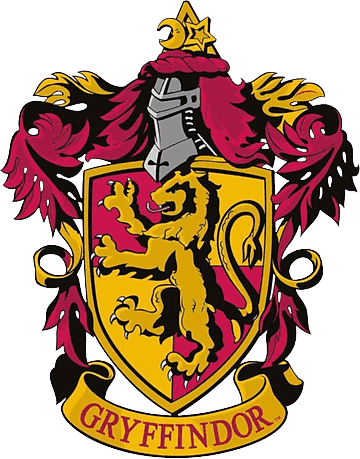
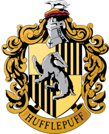
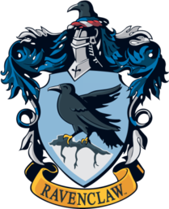
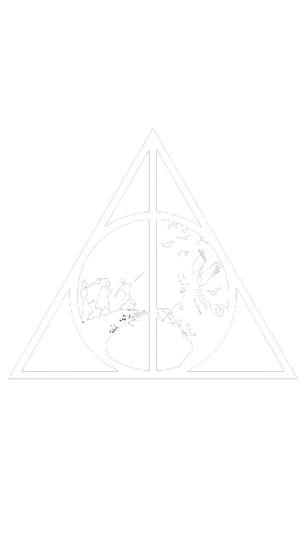
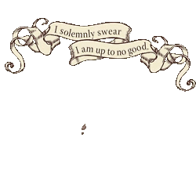
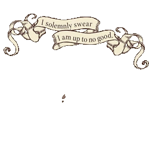

Harry Potter e o Mundo Bruxo
Sinopse:
Harry Potter é um garoto órfão que vive infeliz com seus tios, os Dursleys. Ele recebe uma carta contendo um convite para ingressar em Hogwarts, uma famosa escola especializada em formar jovens bruxos. Em Hogwarts os novos bruxos aprendem diversas matérias do mundo mágico, de Feitiços a Herbologia, aqueles que gostam de práticar esportes tem a opção de jogar Quadribol, ter a sensação de voar em uma vassoura mágica e marcas pontos para sua casa em torneios.Harry adentra nesse mundo mágico que jamais imaginaria, vivendo diversas aventuras e descobrindo segredos com seus amigos, Rony Weasley e Hermione Granger.
| Novos alunos bruxos e suas respectivas casas ➪ | Primeiro Nome | Sobrenome | Casa em Hogwarts |
|---|---|---|
| Harry | Potter | Grifinória |
| Hermione | Granger | Grifinória |
| Draco | Malfoy | Sonserina |
| Rony | Weasley | Grifinória |
| Neville | Longbottom | Grifinória |
| Luna | Scamander | Corvinal |
| Cedrico | Diggory | Lufa-lufa |
| Nome | Disciplina/Cargo | Casa em Hogwarts |
|---|---|---|
| Alvo Dumbledore | Diretor | Grifinória |
| Severu Snape | Poções | Sonserina |
| Minerva Mcgonagall | Transfiguração | Grifinória |
| Rubeo Hagrid | Guardião das terras de Hogwarts | Grifinória |
| Fílio Flitwick | Feitiços | Corvinal |
| Pomona Sprout | Herbologia | Lufa-lufa |
| Sibila Trelawney | Advinção | Corvinal |
Material de Hogwarts e mais:
- Polissuco
- Elixir da Vida
- Volubilis
- Felix Felicis
- Expecto Patronum
- Expelliarmus
- Petrificus Totalus
- Accio
- Basilisco
- Hipogrifo
- Fênix
- Duende
- Trasgo
- Dementador
- Corujas
- Gatos
- Sapos
- Cerejeira com núcleo de Pena de Fenix
- Videira com núcleo de Dragão
- Salgueir com núcleo de Unicórnio
Poções:
Magias:
Livro de Criaturas:
Bichos de estimação permitidos:
Varinhas de:
Conhecendo Harry, Rony e Hermione:
As casas de Hogwarts:
Grifinória é uma das quatro casas da Escola de Magia e Bruxaria de Hogwarts fundada por Godric Gryffindor.
As características particulares dos alunos selecionados para a Grifinória são a coragem, nobreza e determinação. O animal emblema é um leão.

Lufa-Lufa, fundada por Helga Hufflepuff, é uma das quatro casas da Escola de Magia e Bruxaria de Hogwarts, sendo conhecida como a mais inclusiva entre as outras três; valorizando o trabalho árduo, a dedicação, a paciência, a lealdade e o jogo limpo ao invés de uma aptidão particular de seus membros. O animal emblema é um texugo.

Corvinal, fundada por Rowena Ravenclaw, é uma das quatro casas da Escola de Magia e Bruxaria de Hogwarts.
Seus membros, comumente, são caracterizados por sua inteligência, aprendizado e sabedoria. O animal emblema é um corvo.

Sonserina, fundada por Salazar Slytherin, é uma das quatro casas da Escola de Magia e Bruxaria de Hogwarts. Ao estabelecer a casa, Salazar instruiu o Chapéu Seletor a escolher somente alunos que obtivessem algumas de suas características particulares as quais ele prezava.O animal emblema é uma cobra.
O conto dos três irmãos e as Reliquias da Morte:
Era uma vez três irmãos que viajavam por uma estrada deserta e tortuosa ao anoitecer. Depois de algum tempo, os irmãos chegaram a um rio fundo demais para vadear e perigoso demais para atravessar a nado. Os irmãos, porém, eram versados em magia, então simplesmente agitaram as mãos e fizeram aparecer uma ponte sobre as águas traiçoeiras. Já estavam na metade da travessia quando viram o caminho bloqueado por um vulto encapuzado... era a própria Morte

Os Marotos:
Os Marotos foi um grupo de quatro alunos de Hogwarts da casa da Grifinória formado nos anos 70, numa época anterior ao nascimento de Harry e seus amigos (Trio de ouro).Eles eram Remo Lupin (Aluado), Sirius Black (Almofadinhas), Tiago Potter (Pontas) e Pedro Pettigrow (Rabicho). No quinto ano deles se tornarem animagos sozinhos, coisa que apenas bruxos adultos, com a ajuda do ministério da magia, conseguiam.
 
